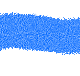
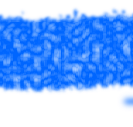
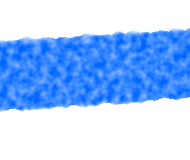

<mat-label>
    <div style="text-align:center;"><h6>Outils de dessin:</h6></div>
</mat-label>
<div id=drawingTool class='scrollable'>
    <mat-form-field>
        <mat-label>Outils:</mat-label>
        <mat-select [(value)] ="selectedTool" (selectionChange) ="sendTool()">
            <mat-option value="Pencil"><mat-icon class="fas fa-pencil-alt" style="font-size: 1.5em" ></mat-icon>Crayon</mat-option>
            <mat-option value="Pen"><mat-icon class="fas fa-pen-fancy"  style="font-size: 1.5em"></mat-icon>Stylo</mat-option>
            <mat-option value="Paintbrush"><mat-icon class="fas fa-paint-brush" style="font-size: 1.5em" ></mat-icon>Pinceau</mat-option>
            <mat-option value="Line"><mat-icon class="fas fa-grip-lines-vertical" style="font-size: 1.5em" ></mat-icon>Ligne</mat-option>
            <mat-option value="SprayPaint"><mat-icon class="fas fa-spray-can" style="font-size: 1.5em"></mat-icon>Aérosol</mat-option>
            <mat-option value="Feather"><mat-icon class="fas fa-feather-alt" style="font-size: 1.5em" ></mat-icon>Plume</mat-option>
        </mat-select>
    </mat-form-field>

    <div *ngIf="pen">
        <mat-label>Épaisseur minimale:</mat-label>
        <mat-slider [disabled]="this.minWidth > this.maxWidth" [min]="1" [max]="50" tickInterval="5" [(value)]="minWidth" [ngClass]="sendMinPenWidth()" [thumbLabel]="minWidth"></mat-slider>
        <br>
        <mat-label>Épaisseur maximale:</mat-label>
        <mat-slider [min]="1" [max]="50" tickInterval="5" [(value)]="maxWidth" [ngClass]="sendMaxPenWidth()" [thumbLabel]="maxWidth"></mat-slider>

        <p *ngIf="this.minWidth > this.maxWidth"> La valeur minimale de l'épaisseur ne peut pas excéder la valeur maximale</p>
    </div>

    <div *ngIf="!pen">
        <mat-label>Épaisseur: </mat-label>
        <mat-slider [min]="1" [max]="50" tickInterval="5" [(value)]="width" [ngClass]="sendWidth()" [thumbLabel]="width"></mat-slider>
    </div>

    <div *ngIf="feather">
        <mat-label>Angle:</mat-label>
        <mat-slider [min]="0" [max]="360" step="1" tickInterval="5" [(value)]="angle" [ngClass]="sendAngle()" [thumbLabel]="angle"></mat-slider>
    </div>

    <div *ngIf="paintbrush">
        <mat-form-field>
            <mat-label>Texture:</mat-label>

            <mat-select [(value)] ="selectedTexture" [ngClass] ="sendTexture()">
            <mat-option value="Filter1">Texture #1
                
            </mat-option>
            <mat-option value="Filter2">Texture #2
                
            </mat-option>
            <mat-option value="Filter3">Texture #3
                
            </mat-option>
            <mat-option value="Filter4">Texture #4
                
            </mat-option>
            <mat-option value="Filter5">Texture #5
                
            </mat-option>
            </mat-select>
        </mat-form-field>
    </div>

    <div *ngIf="sprayPaint">
        <mat-label>Émission par seconde:</mat-label>
        <mat-slider tickInterval="5" [min]="30" [max]="400" [(value)]="emission" [ngClass]="sendEmission()" [thumbLabel]="emission"></mat-slider>
    </div>

    <div *ngIf="line">
        <mat-form-field>
            <mat-label>Type de tracé:</mat-label>
            <mat-select [(value)] ="selectedPattern" [ngClass] ="sendPattern()">
                    <mat-option value="Continuous"><mat-icon class="fas fa-grip-lines-vertical" style="font-size: 1.5em" ></mat-icon>Continu</mat-option>
                    <mat-option value="DottedLine"><mat-icon class="fas fa-ellipsis-h" style="font-size: 1.5em" ></mat-icon>Pointillé </mat-option>
                    <mat-option value="DottedPoint"><mat-icon class="fas fa-ellipsis-h" style="font-size: 1.5em" ></mat-icon>Pointillé point</mat-option>
            </mat-select>
        </mat-form-field>

        <mat-form-field>
            <mat-label>Options de jonction:</mat-label>
            <mat-select [(value)] ="selectedJuntion" [ngClass] ="sendJunction()">
                    <mat-option value="round">Arrondi</mat-option>
                    <mat-option value="butt">Angles</mat-option>
                    <mat-option value="Point">Avec point</mat-option>
            </mat-select>
        </mat-form-field>

        <div *ngIf="displayPoint">
            <mat-label>Diamètre du point jonction:</mat-label>
            <mat-slider [min]="1" [max]="50" tickInterval="5" [(value)]="diameter" [ngClass]="sendDiameter()" [thumbLabel]="diameter"></mat-slider>
        </div>
    </div>
</div>
